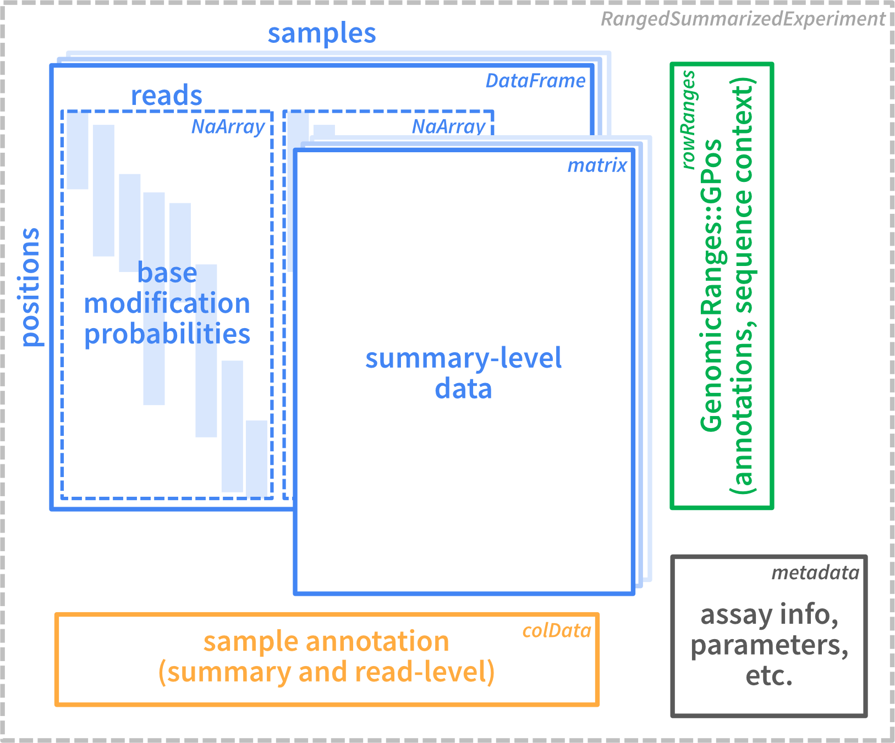

SingleMoleculeGenomicsIO
Source:vignettes/SingleMoleculeGenomicsIO.Rmd
SingleMoleculeGenomicsIO.RmdOverview
SingleMoleculeGenomicsIO provides tools for reading and
processing single-molecule genomics data in R. These include functions
for reading base modifications from modBam files (standard
bam files with modification data stored in MM and
ML tags, see SAMtags.pdf),
e.g. generated from Oxford Nanopore or PacBio data using tools like Dorado or equivalent,
from text files generated by modkit, or from
bam files where modification information is encoded via
sequence mismatches (e.g., resulting from bisulfite sequencing or
deamination-based protocols). The package also provides an efficient
representation of such data as R objects (based on the widely used
SummarizedExperiment class), and functions to manipulate
and summarize such objects. SingleMoleculeGenomicsIO does
not provide functions for downstream analyses (e.g. differential
footprint identification or nucleosome analyses), or visualization. Such
functionality can for example be found in footprintR or nomeR.
In this vignette, we will focus on reading data from these different formats and outline how to process the obtained data, e.g. to filter out low-quality reads, subset to specific sequence contexts, or regroup the reads according to some annotation of interest.
Current contributors include:
Installation
SingleMoleculeGenomicsIO can be installed from GitHub
via the BiocManager package:
if (!requireNamespace("BiocManager", quietly = TRUE))
install.packages("BiocManager")
BiocManager::install("fmicompbio/SingleMoleculeGenomicsIO")Data representation
The figure below illustrates the basic structure of the data
container used within SingleMoleculeGenomicsIO. All reading
functions described in the next section generate a container of this
type.

As we see, the data is stored in a
RangedSummarizedExperiment object. This is a standard
Bioconductor container that can contain one or more assays (storing the
observed data), together with annotations for rows (genomic positions)
and columns (samples or individual reads), as well as general metadata
in a list format.
The assay data in the object can be either on the individual read level, or represent data summarized across all reads for a given sample. As we will see below, an object can contain both read-level and summary-level data.
Load data from modBam files
In this section we will mainly focus on reading data from
modBam files, and explore the generated object. For more
information about reading other types of supported files (see above), we
refer to section @ref(other-formats). As mentioned, regardless of the
reading function that is used, the resulting
SummarizedExperiment object will have the same format.
Load read-level data
A small example dataset with 6mA modifications representing
accessibility, in the form of two modBam files generated
using the Dorado
aligner, is provided with SingleMoleculeGenomicsIO. Here,
we read this into R using the readModBam() function.
Typically, only a subset of the full modBam file,
corresponding to a specific genomic region of interest, is loaded.
As these modBam files represent 6mA modifications, we
set modbase = "a" in the readModBam(). For a
full list of possible modifications, see the section about base
modifications in the SAM tag
specification). We also provide a sequence reference (genome
sequence) from which to extract the genomic sequence context for
modified bases. This can be helpful during analysis, e.g. to filter out
observations that are likely to represent sequencing error.
# read-level 6mA data generated by Dorado
modbamfiles <- system.file("extdata",
c("6mA_1_10reads.bam", "6mA_2_10reads.bam"),
package = "SingleMoleculeGenomicsIO")
names(modbamfiles) <- c("sample1", "sample2")
# file with sequence of the reference genome in fasta format
reffile <- system.file("extdata", "reference.fa.gz",
package = "SingleMoleculeGenomicsIO")
se <- readModBam(bamfiles = modbamfiles,
regions = "chr1:6940000-7000000",
modbase = "a",
verbose = TRUE,
sequenceContextWidth = 1,
sequenceReference = reffile,
BPPARAM = SerialParam())
#> ℹ extracting base modifications from modBAM files
#> ℹ finding unique genomic positions...
#> ✔ finding unique genomic positions... [59ms]
#>
#> ℹ collapsed 17739 positions to 7967 unique ones
#> ✔ collapsed 17739 positions to 7967 unique ones [17ms]
#>
#> ℹ extracting sequence contexts
#> ✔ extracting sequence contexts [590ms]
#>
se
#> class: RangedSummarizedExperiment
#> dim: 7967 2
#> metadata(4): readLevelData variantPositions bamHeader filteredOutReads
#> assays(1): mod_prob
#> rownames: NULL
#> rowData names(1): sequenceContext
#> colnames(2): sample1 sample2
#> colData names(4): sample modbase n_reads readInfoThis will create a RangedSummarizedExperiment object
with rows corresponding to individual genomic positions:
# rows are positions...
rowRanges(se)
#> UnstitchedGPos object with 7967 positions and 1 metadata column:
#> seqnames pos strand | sequenceContext
#> <Rle> <integer> <Rle> | <DNAStringSet>
#> [1] chr1 6925830 - | A
#> [2] chr1 6925834 - | A
#> [3] chr1 6925836 - | A
#> [4] chr1 6925837 - | A
#> [5] chr1 6925841 - | A
#> ... ... ... ... . ...
#> [7963] chr1 6941611 - | A
#> [7964] chr1 6941614 - | A
#> [7965] chr1 6941620 - | A
#> [7966] chr1 6941622 - | A
#> [7967] chr1 6941631 - | A
#> -------
#> seqinfo: 1 sequence from an unspecified genome; no seqlengthsThe positions are stranded, as base modifications can be observed on either of the two strands:
We notice that (as expected) most of the positions for which we obtain a modification value indeed correspond to an ‘A’ in the genome sequence. Discrepancies here may arise from, e.g., sequencing errors or differences between the genome sequence of the studied subjects and the reference sequence.
table(rowRanges(se)$sequenceContext)
#>
#> A C G T
#> 7556 86 284 41The columns of se correspond to samples (recall that in
our case we loaded two modBam files):
# ... and columns are samples
colData(se)
#> DataFrame with 2 rows and 4 columns
#> sample modbase n_reads
#> <character> <character> <integer>
#> sample1 sample1 a 3
#> sample2 sample2 a 2
#> readInfo
#> <List>
#> sample1 14.1428:20058:14801:...,16.0127:11305:11214:...,20.3082:12277:12227:...,...
#> sample2 9.67461:11834:11234:...,13.66480:10057:9898:...,...The sample names in the sample column are obtained from
the input files (here modbamfiles), or if the files are not
named will be automatically assigned (using "s1",
"s2" and so on, assuming that each file corresponds to a
separate sample).
Read-level information is contained in a list under
readInfo, with one element per sample:
se$readInfo
#> List of length 2
#> names(2): sample1 sample2In general, columns in colData that provide read-level
information can be obtained using
getReadLevelColDataNames():
getReadLevelColDataNames(se)
#> [1] "readInfo"Each sample typically contains several reads (see
se$n_reads), which correspond to the rows of
se$readInfo, for example for "sample1":
se$readInfo$sample1
#> DataFrame with 3 rows and 6 columns
#> qscore read_length
#> <numeric> <integer>
#> sample1-233e48a7-f379-4dcf-9270-958231125563 14.1428 20058
#> sample1-d52a5f6a-a60a-4f85-913e-eada84bfbfb9 16.0127 11305
#> sample1-92e906ae-cddb-4347-a114-bf9137761a8d 20.3082 12277
#> aligned_length variant_label
#> <integer> <character>
#> sample1-233e48a7-f379-4dcf-9270-958231125563 14801 NA
#> sample1-d52a5f6a-a60a-4f85-913e-eada84bfbfb9 11214 NA
#> sample1-92e906ae-cddb-4347-a114-bf9137761a8d 12227 NA
#> ref_strand aligned_fraction
#> <character> <numeric>
#> sample1-233e48a7-f379-4dcf-9270-958231125563 - 0.737910
#> sample1-d52a5f6a-a60a-4f85-913e-eada84bfbfb9 - 0.991950
#> sample1-92e906ae-cddb-4347-a114-bf9137761a8d - 0.995927Explore assay data
At this point, the RangedSummarizedExperiment object
contains a single assay named mod_prob, which is a
DataFrame with modification probabilities.
assayNames(se)
#> [1] "mod_prob"
m <- assay(se, "mod_prob")
m
#> DataFrame with 7967 rows and 2 columns
#> sample1 sample2
#> <NaMatrix> <NaMatrix>
#> 1 0:NA:NA NA:NA
#> 2 0:NA:NA NA:NA
#> 3 0:NA:NA NA:NA
#> 4 0:NA:NA NA:NA
#> 5 0.275390625:NA:NA NA:NA
#> ... ... ...
#> 7963 NA:NA:0.052734375 NA:NA
#> 7964 NA:NA:0.130859375 NA:NA
#> 7965 NA:NA:0.068359375 NA:NA
#> 7966 NA:NA:0.060546875 NA:NA
#> 7967 NA:NA:0.056640625 NA:NAIn order to store read-level data for variable numbers of reads per
sample, each sample column is not just a simple vector, but a
position-by-read NaMatrix (a sparse matrix object defined
in the SparseArray
package).
m$sample1
#> <7967 x 3 NaMatrix> of type "double" [nnacount=11300 (47%)]:
#> sample1-233e48a7-f379-4dcf-9270-958231125563
#> [1,] 0.0000000
#> [2,] 0.0000000
#> [3,] 0.0000000
#> [4,] 0.0000000
#> [5,] 0.2753906
#> ... .
#> [7963,] NA
#> [7964,] NA
#> [7965,] NA
#> [7966,] NA
#> [7967,] NA
#> sample1-d52a5f6a-a60a-4f85-913e-eada84bfbfb9
#> [1,] NA
#> [2,] NA
#> [3,] NA
#> [4,] NA
#> [5,] NA
#> ... .
#> [7963,] NA
#> [7964,] NA
#> [7965,] NA
#> [7966,] NA
#> [7967,] NA
#> sample1-92e906ae-cddb-4347-a114-bf9137761a8d
#> [1,] NA
#> [2,] NA
#> [3,] NA
#> [4,] NA
#> [5,] NA
#> ... .
#> [7963,] 0.05273438
#> [7964,] 0.13085938
#> [7965,] 0.06835938
#> [7966,] 0.06054688
#> [7967,] 0.05664062If a ‘flat’ matrix is needed, in which columns correspond to reads
instead of samples, it can be created using as.matrix().
Notice the number of columns in each of the objects:
ncol(se) # 2 samples
#> [1] 2
ncol(m$sample1) # 3 reads in "sample1"
#> [1] 3
ncol(m$sample2) # 2 reads in "sample2"
#> [1] 2
ncol(as.matrix(m)) # 5 reads in total
#> [1] 5In general, assays that provide read-level information can be
obtained using getReadLevelAssayNames():
getReadLevelAssayNames(se)
#> [1] "mod_prob"One advantage of the grouping of reads per sample is that we can
easily perform per-sample operations using lapply (returns
a list) or endoapply (returns a
DataFrame):
lapply(m, ncol)
#> $sample1
#> [1] 3
#>
#> $sample2
#> [1] 2
endoapply(m, ncol)
#> DataFrame with 1 row and 2 columns
#> sample1 sample2
#> <integer> <integer>
#> 1 3 2The NaMatrix objects do not store NA values
explicitly and thus use much less memory compared to a normal (dense)
matrix. The NA values here occur at positions (rows) that
are not covered by the read of that column, and there are typically a
large fraction of NA values:
prod(dim(m$sample1)) # total number of values
#> [1] 23901
nnacount(m$sample1) # number of non-NA values
#> [1] 11300Important: These NA values have to be
excluded for example when calculating the average modification
probability for a position using mean(..., na.rm = TRUE),
otherwise the result will be NA for all incompletely
covered positions:
# find row corresponding to position "chr1:6928850:-"
(idx <- which(seqnames(se) == "chr1" & start(se) == 6928850 & strand(se) == "-"))
#> [1] 828
# modification probabilities at the given position
m[idx, ]
#> DataFrame with 1 row and 2 columns
#> sample1 sample2
#> <NaMatrix> <NaMatrix>
#> 1 0.623046875:0.099609375:NA NA:NA
# WRONG: take the mean of all values (including NAs)
lapply(m[idx, ], mean)
#> $sample1
#> [1] NA
#>
#> $sample2
#> [1] NA
# CORRECT: exclude the NA values (na.rm = TRUE)
lapply(m[idx, ], mean, na.rm = TRUE)
#> $sample1
#> [1] 0.3613281
#>
#> $sample2
#> [1] NaNNote that for sample2, in which no read overlaps the selected
position, mean(..., na.rm = TRUE) returns
NaN.
In most cases it is preferable to use the convenience functions in
SingleMoleculeGenomicsIO, such as
flattenReadLevelAssay() (see next section), to calculate
summaries over reads instead of the lapply(...) used above
for illustration.
Summarize read-level data
Summarized data can be obtained from the read-level data by
calculating a per-position summary over the reads in each sample, and
are stored as additional assays in the resulting object. The
flattenReadLevelAssay() function can calculate several
relevant summaries:
se_summary <- flattenReadLevelAssay(
se, statistics = c("Nmod", "Nvalid", "FracMod", "Pmod", "AvgConf"))
# new assays are added to the object
assayNames(se_summary)
#> [1] "mod_prob" "Nmod" "Nvalid" "FracMod" "Pmod" "AvgConf"As discussed above, this will correctly exclude non-observed values
and return zero values (for count assays "Nmod",
“Nvalid”) or NaN for assays with fractions
("FracMod", "Pmod" and
"AvgConf"), for positions without any observed data (see
for example "Pmod" in "sample2"):
assay(se_summary, "Pmod")[idx, ]
#> sample1 sample2
#> 0.3613281 NaNThe summary statistics to calculate are selected using the
statistics argument. By default,
flattenReadLevelAssay() will count the number of modified
(Nmod) and total (Nvalid) reads at each
position and sample, and calculate the fraction of modified bases from
the two (FracMod).
assay(se_summary, "Nmod")[idx, ]
#> sample1 sample2
#> 1 0
assay(se_summary, "Nvalid")[idx, ]
#> sample1 sample2
#> 2 0
assay(se_summary, "FracMod")[idx, ]
#> sample1 sample2
#> 0.5 NaNIn the above example, we additionally calculate the average
modification probability (Pmod) and the average confidence
of the modification calls per position (AvgConf). As we
have not changed the default keepReads = TRUE, we keep the
read-level assay from the input object (mod_prob) in the
returned object. Because of the grouping of reads by sample in
mod_prob, the dimensions of read-level or summary-level
objects remain identical. However, as the summary-level assays only
contain a single value per position and sample, they are regular
matrices rather than the hierarchical DataFrames used for
the read-level data.
# read-level data is retained in "mod_prob" assay
assayNames(se_summary)
#> [1] "mod_prob" "Nmod" "Nvalid" "FracMod" "Pmod" "AvgConf"
# ... which groups the reads by sample
assay(se_summary, "mod_prob")
#> DataFrame with 7967 rows and 2 columns
#> sample1 sample2
#> <NaMatrix> <NaMatrix>
#> 1 0:NA:NA NA:NA
#> 2 0:NA:NA NA:NA
#> 3 0:NA:NA NA:NA
#> 4 0:NA:NA NA:NA
#> 5 0.275390625:NA:NA NA:NA
#> ... ... ...
#> 7963 NA:NA:0.052734375 NA:NA
#> 7964 NA:NA:0.130859375 NA:NA
#> 7965 NA:NA:0.068359375 NA:NA
#> 7966 NA:NA:0.060546875 NA:NA
#> 7967 NA:NA:0.056640625 NA:NA
# the dimensions of read-level `se` and summarized `se_summary` are identical
dim(se)
#> [1] 7967 2
dim(se_summary)
#> [1] 7967 2
# summary-level assays are regular matrices
class(assay(se_summary, "FracMod"))
#> [1] "matrix" "array"Load summary-level data
As illustrated above, summary-level data (e.g. average modification
fraction at each position) can be calculated from read-level data.
Alternatively, reads can also be directly summarized while reading from
modBam files, which is faster and reduces the size of the
object in memory. In addition, there are other file formats that only
store summary-level data (e.g. bed files) that can also be
imported using SingleMoleculeGenomicsIO (see below).
To read summary-level data with readModBam(), we set the
level argument to "summary":
se_summary2 <- readModBam(bamfiles = modbamfiles,
regions = "chr1:6940000-7000000",
modbase = "a",
level = "summary",
verbose = TRUE,
BPPARAM = SerialParam())
#> ℹ extracting base modifications from modBAM files
#> ⠙ 0.000 Mio. genomic positions processed (0.000 Mio./s) [3ms]
#> ℹ finding unique genomic positions...
#> ✔ finding unique genomic positions... [30ms]
#>
#> ⠙ 0.000 Mio. genomic positions processed (0.000 Mio./s) [3ms]ℹ collapsed 11211 positions to 7967 unique ones
#> ✔ collapsed 11211 positions to 7967 unique ones [45ms]
#>
#> ⠙ 0.000 Mio. genomic positions processed (0.000 Mio./s) [3ms]
se_summary2
#> class: RangedSummarizedExperiment
#> dim: 7967 2
#> metadata(2): readLevelData bamHeader
#> assays(3): Nmod Nvalid FracMod
#> rownames: NULL
#> rowData names(0):
#> colnames(2): sample1 sample2
#> colData names(2): sample modbaseNotice that se_summary2 contains only summary-level
assays (Nmod, Nvalid and
FracMod), and no read-level modifications anymore (assay
mod_prob). Otherwise, it resembles the read-level object
se, for example it covers the same genomic positions:
# rows are positions...
rowRanges(se)
#> UnstitchedGPos object with 7967 positions and 1 metadata column:
#> seqnames pos strand | sequenceContext
#> <Rle> <integer> <Rle> | <DNAStringSet>
#> [1] chr1 6925830 - | A
#> [2] chr1 6925834 - | A
#> [3] chr1 6925836 - | A
#> [4] chr1 6925837 - | A
#> [5] chr1 6925841 - | A
#> ... ... ... ... . ...
#> [7963] chr1 6941611 - | A
#> [7964] chr1 6941614 - | A
#> [7965] chr1 6941620 - | A
#> [7966] chr1 6941622 - | A
#> [7967] chr1 6941631 - | A
#> -------
#> seqinfo: 1 sequence from an unspecified genome; no seqlengths
rowRanges(se_summary2)
#> UnstitchedGPos object with 7967 positions and 0 metadata columns:
#> seqnames pos strand
#> <Rle> <integer> <Rle>
#> [1] chr1 6925830 -
#> [2] chr1 6925834 -
#> [3] chr1 6925836 -
#> [4] chr1 6925837 -
#> [5] chr1 6925841 -
#> ... ... ... ...
#> [7963] chr1 6941611 -
#> [7964] chr1 6941614 -
#> [7965] chr1 6941620 -
#> [7966] chr1 6941622 -
#> [7967] chr1 6941631 -
#> -------
#> seqinfo: 1 sequence from an unspecified genome; no seqlengthsThe summary-level assays generated from se (see
se_summary above) are also identical to the ones directly
read from the modBam file into
se_summary2:
Load data for a random subset of the reads
By default, readModBam() will load all reads overlapping
the regions indicated by the regions argument. However, it
is also possible to load a random subset of reads (this can be useful
e.g. to calculate distributions of quality scores, using reads aligning
to different parts of the genome but without the need to load the entire
modBam file into R). This is achieved by setting the
nAlnsToSample argument to a non-zero value (representing
the desired number of reads per sample), and indicating which reference
sequences to sample reads from.
se_sample <- readModBam(bamfiles = modbamfiles,
modbase = "a",
nAlnsToSample = 5,
seqnamesToSampleFrom = "chr1",
verbose = TRUE,
BPPARAM = SerialParam(RNGseed = 1327828L))
#> ℹ extracting base modifications from modBAM files
#> ⠙ 0.000 Mio. genomic positions processed (0.000 Mio./s) [3ms]ℹ opening input file /Users/runner/work/_temp/Library/SingleMoleculeGenomicsIO/extdata/6mA_1_10reads.bam using 1 thread
#> ⠙ 0.000 Mio. genomic positions processed (0.000 Mio./s) [3ms]ℹ sampling alignments with probability 0.5
#> ⠙ 0.000 Mio. genomic positions processed (0.000 Mio./s) [3ms]ℹ reading alignments
#> ⠙ 0.000 Mio. genomic positions processed (0.000 Mio./s) [3ms]ℹ removed 150 unaligned (e.g. soft-masked) of 41618 called bases
#> ⠙ 0.000 Mio. genomic positions processed (0.000 Mio./s) [3ms]ℹ read 5 alignments
#> ⠙ 0.000 Mio. genomic positions processed (0.000 Mio./s) [3ms]ℹ opening input file /Users/runner/work/_temp/Library/SingleMoleculeGenomicsIO/extdata/6mA_2_10reads.bam using 1 thread
#> ⠙ 0.000 Mio. genomic positions processed (0.000 Mio./s) [3ms]ℹ sampling alignments with probability 0.5
#> ⠙ 0.000 Mio. genomic positions processed (0.000 Mio./s) [3ms]ℹ reading alignments
#> ⠙ 0.000 Mio. genomic positions processed (0.000 Mio./s) [3ms]ℹ removed 1165 unaligned (e.g. soft-masked) of 80587 called bases
#> ⠙ 0.000 Mio. genomic positions processed (0.000 Mio./s) [3ms]ℹ read 7 alignments
#> ⠙ 0.000 Mio. genomic positions processed (0.000 Mio./s) [3ms]ℹ finding unique genomic positions...
#> ✔ finding unique genomic positions... [107ms]
#>
#> ⠙ 0.000 Mio. genomic positions processed (0.000 Mio./s) [3ms]ℹ collapsed 31912 positions to 7238 unique ones
#> ✔ collapsed 31912 positions to 7238 unique ones [559ms]
#>
#> ⠙ 0.000 Mio. genomic positions processed (0.000 Mio./s) [3ms]
se_sample$n_reads
#> [1] 5 7Note that the exact number of sampled reads may not be identical to the requested number. One reason for this is that the requested number is combined with the total number of alignments to calculate the fraction of reads to be sampled (in this small case, 0.5), and each alignment will be retained with this probability.
Label reads by sequence variants
The readModBam and readMismatchBam
functions allow to automatically label reads using variant positions
(variantPositions argument):
# create GPos object with reference sequence variant positions
varpos <- GPos(seqnames = "chr1", pos = c(6937731, 6937788, 6937843, 6937857,
6937873, 6937931, 6938932, 6939070))
# load and label reads at varpos
se_varpos <- readModBam(bamfiles = modbamfiles,
modbase = "a",
regions = "chr1:6925000-69500000",
variantPositions = varpos,
verbose = FALSE,
BPPARAM = SerialParam(RNGseed = 1327828L))Read bases at variantPositions will be extracted and
concatenated to create a variant label for each read, using
'-' for non-overlapping positions. The resulting labels are
stored for each sample in the variant_label column of
readInfo:
se_varpos$readInfo$sample1$variant_label
#> [1] "CCAAGGA-" "TCAAGGAC" "CCAAGC--" "CCAAGGAC" "CCAAGGAC" "CCGAGCAC"
#> [7] "CTGGAGAC" "CTAGGG--" "CCAAAG--" "TCAA----"In a diploid experimental system with known heterozygous positions, this allows for example to measure allele specific signals by grouping reads based on these variant labels. A step-by-step example illustrating this procedure is available in the footprintR book.
Load data from other file types
In the previous sections we illustrated how to read data from
modBam files and extract both read-level and summary-level
information. As mentioned in the beginning of this document,
SingleMoleculeGenomicsIO can also be used to read data from
other file formats that are often used to store data from single
molecule genomics experiments.
In cases where read-level modification data has already been
extracted from the modBam files using modkit, these files can
be read into a RangedSummarizedExperiment using the
readModkitExtract() function.
# define path to modkit extract output file
extrfile <- system.file("extdata", "modkit_extract_rc_5mC_1.tsv.gz",
package = "SingleMoleculeGenomicsIO")
# read complete file
readModkitExtract(extrfile, modbase = "m", filter = NULL,
sequenceContextWidth = 3,
sequenceReference = reffile,
BPPARAM = SerialParam())
#> class: RangedSummarizedExperiment
#> dim: 6432 1
#> metadata(3): modkit_threshold filter_threshold readLevelData
#> assays(1): mod_prob
#> rownames: NULL
#> rowData names(1): sequenceContext
#> colnames(1): s1
#> colData names(3): sample modbase readInfo
# only read entries that are not suggested to be filtered out
readModkitExtract(extrfile, modbase = "m", filter = "modkit",
sequenceContextWidth = 3,
sequenceReference = reffile,
BPPARAM = SerialParam())
#> class: RangedSummarizedExperiment
#> dim: 5893 1
#> metadata(3): modkit_threshold filter_threshold readLevelData
#> assays(1): mod_prob
#> rownames: NULL
#> rowData names(1): sequenceContext
#> colnames(1): s1
#> colData names(3): sample modbase readInfoSummary-level data can also be provided as bedMethyl
files (containing total and methylated counts for individual positions).
These can be read using the readBedMethyl() function, which
again returns a RangedSummarizedExperiment object (this
time only containing summary-level assays).
# collapsed 5mC data for a small genomic window in bedMethyl format
bedmethylfiles <- system.file("extdata",
c("modkit_pileup_5mC_1.bed.gz",
"modkit_pileup_5mC_2.bed.gz"),
package = "SingleMoleculeGenomicsIO")
names(bedmethylfiles) <- c("sample1", "sample2")
readBedMethyl(bedmethylfiles,
modbase = "m",
sequenceContextWidth = 3,
sequenceReference = reffile,
BPPARAM = SerialParam())
#> class: RangedSummarizedExperiment
#> dim: 12020 2
#> metadata(1): readLevelData
#> assays(2): Nmod Nvalid
#> rownames: NULL
#> rowData names(1): sequenceContext
#> colnames(2): sample1 sample2
#> colData names(2): sample modbaseIn addition to the modBam files, where modification
information is encoded in the MM and ML tags,
SingleMoleculeGenomicsIO can also load data from
bam files where modification information has to be inferred
from the observed read sequence. This includes bisulfite sequencing data
(where unmethylated and typically inaccessible Cs are converted to Ts)
and data generated using deamination protocols (where instead the
accessible Cs are converted to Ts). Because of these conversions, such
data is aligned to the reference genome using dedicated alignment tools
like the ones provided with the QuasR R package or the
Bismark aligner. SingleMoleculeGenomicsIO
supports reading bam files generated by either of these,
using the readMismatchBam() function. The genomic sequence
context to focus on, as well as specifications about which bases
represent modified and unmodified states, respectively, are determined
based on the arguments sequenceContext,
readBaseUnmod and readBaseMod.
# bisulfite sequencing bam file aligned with QuasR::qAlign
quasrbisfile <- system.file("extdata", "BisSeq_quasr_paired.bam",
package = "SingleMoleculeGenomicsIO")
# read data
readMismatchBam(bamfiles = quasrbisfile,
bamFormat = "QuasR",
regions = "chr1:6950000-6955000",
sequenceContext = "C",
sequenceReference = reffile,
readBaseUnmod = "T",
readBaseMod = "C",
BPPARAM = SerialParam())
#> class: RangedSummarizedExperiment
#> dim: 871 1
#> metadata(6): readLevelData variantPositions ... bamHeader
#> filteredOutReads
#> assays(1): mod_prob
#> rownames: NULL
#> rowData names(1): sequenceContext
#> colnames(1): s1
#> colData names(3): sample n_reads readInfo
# bisulfite sequencing bam file aligned with Bismark
bismarkbisfile <- system.file("extdata", "BisSeq_bismark_paired.bam",
package = "SingleMoleculeGenomicsIO")
# read data
readMismatchBam(bamfiles = bismarkbisfile,
bamFormat = "Bismark",
regions = "chr1:6950000-6955000",
sequenceContext = "C",
sequenceReference = reffile,
readBaseUnmod = "T",
readBaseMod = "C",
BPPARAM = SerialParam())
#> class: RangedSummarizedExperiment
#> dim: 871 1
#> metadata(6): readLevelData variantPositions ... bamHeader
#> filteredOutReads
#> assays(1): mod_prob
#> rownames: NULL
#> rowData names(1): sequenceContext
#> colnames(1): s1
#> colData names(3): sample n_reads readInfoThe table below compares the capabilities of the provided reading functions.
| Function | Description | Read-level output | Summary-level output | Region-based access | Sampling | Variant read labels |
|---|---|---|---|---|---|---|
readModBam |
Read modBam file(s) |
Yes | Yes | Yes | Yes | Yes |
readModkitExtract |
Read modkit extract file(s) |
Yes | No | No | No | No |
readBedMethyl |
Read bedMethyl file(s) |
No | Yes | No | No | No |
readMismatchBam |
Read bam file(s) with modifications
encoded as as sequence mismatches |
Yes | Yes | Yes | Yes | Yes |
Expand the SummarizedExperiment object to single base
resolution
The objects returned by the reading functions above contain data only
for the positions with an observable modification state. For cases where
single nucleotide resolution is required (i.e., where the rows in the
object must cover each position within a region), the
expandSEToBaseSpace will return a suitable object. Note
that any strand information in the original positions will be
ignored.
se_expand <- expandSEToBaseSpace(se)
dim(se_expand)
#> [1] 15802 2Filter positions
SingleMoleculeGenomicsIO provides several ways to filter
out individual genomic positions, based on e.g. the genomic sequence
context or the observed read coverage. Such filtering can be important
to reduce noise in the data for downstream analyses.
To illustrate the position-level filtering, let us consider the
se object obtained from the two modBam files
above:
se
#> class: RangedSummarizedExperiment
#> dim: 7967 2
#> metadata(4): readLevelData variantPositions bamHeader filteredOutReads
#> assays(1): mod_prob
#> rownames: NULL
#> rowData names(1): sequenceContext
#> colnames(2): sample1 sample2
#> colData names(4): sample modbase n_reads readInfoRecall that we added the genomic sequence context of each position
when reading this data (in rowRanges(se)$sequenceContext).
We could also add this manually to the
RangedSummarizedExperiment, via the
addSeqContext() function. We use the
filterPositions() function to filter the rows of
se, retaining only rows where the nucleotide in the
corresponding genomic position is an A, and where the read
coverage is at least 2. Note that for the sequence context filter, any
IUPAC code can be used - for example, NCG would match
trinucleotide contexts with a central C followed by a G (and preceded by
any base).
se_filt <- filterPositions(
se,
filters = c("sequenceContext", "coverage"),
sequenceContext = "A",
assayNameCov = "mod_prob",
minCov = 2
)
dim(se_filt)
#> [1] 3542 2In this case, the filtering reduced the number of unique positions
from 7967 to 3542 (a reduction by 55.5%). At the same time, the number
of non-NA values in the mod_prob assay is only reduced from
17739 to 13292 (a reduction by 25.1%), indicative of the fact that the
filtered out positions are generally covered by only a few reads.
Filter reads
In addition to the position filtering illustrated above,
SingleMoleculeGenomicsIO provides functionality for
calculating read-level quality scores and filtering out entire reads
with low quality. The calculation of the quality scores is performed
using the addReadStats() function, which will return a
RangedSummarizedExperiment object with the quality scores
added as a new column in the colData (by default named
QC).
# start from read-level data
# ... some read-level statistics were added already when reading the data
se$readInfo$sample1
#> DataFrame with 3 rows and 6 columns
#> qscore read_length
#> <numeric> <integer>
#> sample1-233e48a7-f379-4dcf-9270-958231125563 14.1428 20058
#> sample1-d52a5f6a-a60a-4f85-913e-eada84bfbfb9 16.0127 11305
#> sample1-92e906ae-cddb-4347-a114-bf9137761a8d 20.3082 12277
#> aligned_length variant_label
#> <integer> <character>
#> sample1-233e48a7-f379-4dcf-9270-958231125563 14801 NA
#> sample1-d52a5f6a-a60a-4f85-913e-eada84bfbfb9 11214 NA
#> sample1-92e906ae-cddb-4347-a114-bf9137761a8d 12227 NA
#> ref_strand aligned_fraction
#> <character> <numeric>
#> sample1-233e48a7-f379-4dcf-9270-958231125563 - 0.737910
#> sample1-d52a5f6a-a60a-4f85-913e-eada84bfbfb9 - 0.991950
#> sample1-92e906ae-cddb-4347-a114-bf9137761a8d - 0.995927
# ... calculate additional read statistics
se <- addReadStats(se, name = "QC",
BPPARAM = SerialParam())
#> Warning: Too few points to estimate noise floor (1); raw noise variances
#> are used.
#> Warning: Too few points to estimate noise floor (0); raw noise variances
#> are used.
se$QC$sample1
#> DataFrame with 3 rows and 13 columns
#> MeanModProb FracMod MeanConf
#> <numeric> <numeric> <numeric>
#> sample1-233e48a7-f379-4dcf-9270-958231125563 0.1652868 0.1498969 0.943914
#> sample1-d52a5f6a-a60a-4f85-913e-eada84bfbfb9 0.0835376 0.0646707 0.958320
#> sample1-92e906ae-cddb-4347-a114-bf9137761a8d 0.0556013 0.0347512 0.965854
#> MeanConfUnm MeanConfMod
#> <numeric> <numeric>
#> sample1-233e48a7-f379-4dcf-9270-958231125563 0.957961 0.864255
#> sample1-d52a5f6a-a60a-4f85-913e-eada84bfbfb9 0.967633 0.823622
#> sample1-92e906ae-cddb-4347-a114-bf9137761a8d 0.971512 0.808703
#> FracLowConf IQRModProb sdModProb
#> <numeric> <numeric> <numeric>
#> sample1-233e48a7-f379-4dcf-9270-958231125563 0.0680724 0.1308594 0.312860
#> sample1-d52a5f6a-a60a-4f85-913e-eada84bfbfb9 0.0470060 0.0488281 0.215142
#> sample1-92e906ae-cddb-4347-a114-bf9137761a8d 0.0355852 0.0000000 0.164023
#> ACModProb
#> <list>
#> sample1-233e48a7-f379-4dcf-9270-958231125563 0.1306906,0.0840176,0.0591518,...
#> sample1-d52a5f6a-a60a-4f85-913e-eada84bfbfb9 0.0619512,0.0479904,0.0392903,...
#> sample1-92e906ae-cddb-4347-a114-bf9137761a8d -0.00193260,-0.01562365,-0.00424019,...
#> PACModProb
#> <list>
#> sample1-233e48a7-f379-4dcf-9270-958231125563 -0.0415954,-0.0216324,-0.0132802,...
#> sample1-d52a5f6a-a60a-4f85-913e-eada84bfbfb9 -0.00443190,-0.00209608,-0.00710440,...
#> sample1-92e906ae-cddb-4347-a114-bf9137761a8d -0.01637500, 0.00794205,-0.02053895,...
#> SNR SignalVar NoiseVar
#> <numeric> <numeric> <numeric>
#> sample1-233e48a7-f379-4dcf-9270-958231125563 0.698999 0.0605703 0.0373113
#> sample1-d52a5f6a-a60a-4f85-913e-eada84bfbfb9 0.154130 0.0243781 0.0219079
#> sample1-92e906ae-cddb-4347-a114-bf9137761a8d 0.307366 0.0148793 0.0120242As a result, the colData now contains two columns with
read-level information:
getReadLevelColDataNames(se)
#> [1] "readInfo" "QC"The distribution of the quality statistics can also be plotted, which is often helpful in order to decide on cutoffs for downstream analysis. Note that in the current example data, each sample contains only a few reads and hence the plot below is very sparse.
plotReadStats(se, readInfoCol = "readInfo", qcCol = "QC")
The filterReads() function can be used to filter the set
of reads based on various quality indicators. This step requires that
the read statistics that will be used for the filtering have been
calculated as indicated above.
se_filtreads <- filterReads(se, readInfoCol = "readInfo",
qcCol = "QC", minQscore = 10,
minAlignedFraction = 0.8)
# number of retained reads for each sample
lapply(assay(se_filtreads, "mod_prob"), ncol)
#> $sample1
#> [1] 2
#>
#> $sample2
#> [1] 1
# tables with the reason behind each filtered read
metadata(se_filtreads)$filteredOutReads
#> $sample1
#> <1 x 9 SparseMatrix> of type "logical" [nzcount=1 (11%)]:
#> Qscore Entropy ... AllNA
#> sample1-233e48a7-f379-4dcf-9270-958231125563 FALSE FALSE . FALSE
#>
#> $sample2
#> <1 x 9 SparseMatrix> of type "logical" [nzcount=1 (11%)]:
#> Qscore Entropy ... AllNA
#> sample2-034b625e-6230-4f8d-a713-3a32cd96c298 TRUE FALSE . FALSEBoth position and read filters above were applied after reading the
data from the modBam file into a
RangedSummarizedExperiment object. An alternative to this
is to create a filtered modBam file once, and then use that
for all downstream analyses. This can be done using the
filterReadsModBam() file, which accepts the same filter
criteria as filterReads() above. Here we illustrate the
process using one of the example modBam files provided with
the package.
# input file
modbamfile <- system.file("extdata", "6mA_1_10reads.bam",
package = "SingleMoleculeGenomicsIO")
# output file
filtmodbamfile <- tempfile(fileext = ".bam")
res <- filterReadsModBam(infiles = modbamfile,
outfiles = filtmodbamfile,
modbase = "a",
indexOutfiles = FALSE,
minQscore = 10,
minAlignedFraction = 0.8,
BPPARAM = BiocParallel::SerialParam(),
verbose = TRUE)
#> ℹ start filtering of /Users/runner/work/_temp/Library/SingleMoleculeGenomicsIO/extdata/6mA_1_10reads.bam using 1 thread
#> ⠙ 0.000 Mio. genomic positions processed (0.000 Mio./s) [3ms]ℹ merging 1 filtered chunks
#> ⠙ 0.000 Mio. genomic positions processed (0.000 Mio./s) [3ms]ℹ done filtering: retained 8 of 10 records (80%)
#> ⠙ 0.000 Mio. genomic positions processed (0.000 Mio./s) [3ms]
res
#> sample
#> 1 s1
#> infile
#> 1 /Users/runner/work/_temp/Library/SingleMoleculeGenomicsIO/extdata/6mA_1_10reads.bam
#> outfile
#> 1 /var/folders/tb/y368xp_x10s3ty1b_mtl5mxr0000gn/T//Rtmp7n36uo/file76ba4a8d45df.bam
#> total retained filtered_unmapped filtered_secondary filtered_supplementary
#> 1 10 8 0 0 0
#> filtered_minReadLength filtered_minAlignedLength filtered_minAlignedFraction
#> 1 0 0 2
#> filtered_minQscore filtered_minSNR filtered_maxFracLowConf
#> 1 0 0 0
#> filtered_maxEntropy
#> 1 0Subset and regroup reads
After importing read-level data with
SingleMoleculeGenomicsIO, the set of reads can be subset
using the subsetReads() function. The subsetting can be
done either by specifying the read names or indices to retain, or by
asking for a random subset of reads.
# subset to only the first two reads per sample
(reads_to_keep <- lapply(assay(se, "mod_prob"), function(s) 1:2))
#> $sample1
#> [1] 1 2
#>
#> $sample2
#> [1] 1 2
se_subset <- subsetReads(se, reads = reads_to_keep)
lapply(assay(se_subset, "mod_prob"), ncol)
#> $sample1
#> [1] 2
#>
#> $sample2
#> [1] 2
# subset to specified reads
(reads_to_keep <- unlist(lapply(assay(se, "mod_prob"), function(s) colnames(s)[c(1, 2)])))
#> sample11
#> "sample1-233e48a7-f379-4dcf-9270-958231125563"
#> sample12
#> "sample1-d52a5f6a-a60a-4f85-913e-eada84bfbfb9"
#> sample21
#> "sample2-034b625e-6230-4f8d-a713-3a32cd96c298"
#> sample22
#> "sample2-d03efe3b-a45b-430b-9cb6-7e5882e4faf8"
se_subset <- subsetReads(se, reads = reads_to_keep)
lapply(assay(se_subset, "mod_prob"), ncol)
#> $sample1
#> [1] 2
#>
#> $sample2
#> [1] 2
# request a random set of two reads per sample
se_subset <- subsetReads(se, randomSubset = 2)
lapply(assay(se_subset, "mod_prob"), ncol)
#> $sample1
#> [1] 2
#>
#> $sample2
#> [1] 2See ?subsetReads for more subsetting options.
In some situations, a regrouping of the reads is more
suitable than a subsetting. By default, the reads will be grouped by the
sample they originate from (i.e., each column in the
SummarizedExperiment corresponds to a sample). The
regroupReads() and regroupReadsByColData()
functions allow us to reorganize the reads in such a way that each
column of the object instead corresponds to another read property (e.g.,
the strand from which the read originates). The new groups can be
defined manually as a named list of read identifiers (for
regroupReads()), or be generated automatically from a
categorical column in the read-level column annotations (for
regroupReadsByColData()). Here we illustrate how to regroup
the reads by the strand.
# read strand is stored in the column annotations (ref_strand)
se$readInfo$sample1
#> DataFrame with 3 rows and 6 columns
#> qscore read_length
#> <numeric> <integer>
#> sample1-233e48a7-f379-4dcf-9270-958231125563 14.1428 20058
#> sample1-d52a5f6a-a60a-4f85-913e-eada84bfbfb9 16.0127 11305
#> sample1-92e906ae-cddb-4347-a114-bf9137761a8d 20.3082 12277
#> aligned_length variant_label
#> <integer> <character>
#> sample1-233e48a7-f379-4dcf-9270-958231125563 14801 NA
#> sample1-d52a5f6a-a60a-4f85-913e-eada84bfbfb9 11214 NA
#> sample1-92e906ae-cddb-4347-a114-bf9137761a8d 12227 NA
#> ref_strand aligned_fraction
#> <character> <numeric>
#> sample1-233e48a7-f379-4dcf-9270-958231125563 - 0.737910
#> sample1-d52a5f6a-a60a-4f85-913e-eada84bfbfb9 - 0.991950
#> sample1-92e906ae-cddb-4347-a114-bf9137761a8d - 0.995927
# regroup reads by strand, ignoring the sample information
se_regroup <- regroupReadsByColData(se, colNames = "readInfo:ref_strand",
withinSample = FALSE)
colnames(se_regroup)
#> [1] "-" "+"
# regroup reads by strand, within each sample
se_regroup <- regroupReadsByColData(se, colNames = "readInfo:ref_strand",
withinSample = TRUE)
colnames(se_regroup)
#> [1] "sample1--" "sample2--" "sample2-+"Add read segment annotations
Read segment annotation allow us to store information about specific
subregions of reads. These could, for example, represent inferred
locations of nucleosomes or transcription factor binding sites. The
segments need to be provided as a list of IRangesList
objects (one per sample), with each element of an
IRangesList providing the annotations for one read.
# define segments
segs <- list(sample1 = IRangesList(
"sample1-d52a5f6a-a60a-4f85-913e-eada84bfbfb9" = IRanges(
start = 6925834, width = 140),
"sample1-233e48a7-f379-4dcf-9270-958231125563" = IRanges(
start = c(6926000, 6926200), width = 140)),
sample2 = IRangesList())
# add segment annotation to se
se <- annotateReadSegments(se, irlList = segs, name = "nucl")
se$nucl
#> $sample1
#> IRangesList object of length 3:
#> $`sample1-233e48a7-f379-4dcf-9270-958231125563`
#> IRanges object with 2 ranges and 0 metadata columns:
#> start end width
#> <integer> <integer> <integer>
#> [1] 6926000 6926139 140
#> [2] 6926200 6926339 140
#>
#> $`sample1-d52a5f6a-a60a-4f85-913e-eada84bfbfb9`
#> IRanges object with 1 range and 0 metadata columns:
#> start end width
#> <integer> <integer> <integer>
#> [1] 6925834 6925973 140
#>
#> $`sample1-92e906ae-cddb-4347-a114-bf9137761a8d`
#> IRanges object with 0 ranges and 0 metadata columns:
#> start end width
#> <integer> <integer> <integer>
#>
#>
#> $sample2
#> IRangesList object of length 2:
#> $`sample2-034b625e-6230-4f8d-a713-3a32cd96c298`
#> IRanges object with 0 ranges and 0 metadata columns:
#> start end width
#> <integer> <integer> <integer>
#>
#> $`sample2-d03efe3b-a45b-430b-9cb6-7e5882e4faf8`
#> IRanges object with 0 ranges and 0 metadata columns:
#> start end width
#> <integer> <integer> <integer>Count state pairs
The import functions exemplified above all return a
SummarizedExperiment object with read- and/or summary-level
data. For certain applications, other data representations are more
suitable. The countStatePairs() function allows us to parse
a modBam file and tabulate the number of pairs of bases at
a given distance and with a given combination of modification
states.
sp <- countStatePairs(bamfile = modbamfiles[1],
modbase = "a",
windowSize = 200,
BPPARAM = BiocParallel::SerialParam(),
verbose = FALSE)
sp
#> DataFrame with 200 rows and 5 columns
#> S unmod_unmod unmod_mod mod_unmod mod_mod
#> <integer> <numeric> <numeric> <numeric> <numeric>
#> 1 1 27084 0 0 2461
#> 2 2 8877 281 340 408
#> 3 3 9131 441 439 264
#> 4 4 8140 399 403 282
#> 5 5 8565 485 493 164
#> ... ... ... ... ... ...
#> 196 196 7289 578 572 114
#> 197 197 7351 589 590 123
#> 198 198 7566 635 591 140
#> 199 199 7491 624 565 129
#> 200 200 7377 580 575 119Session info
sessioninfo::session_info()
#> ─ Session info ───────────────────────────────────────────────────────────────
#> setting value
#> version R Under development (unstable) (2026-05-03 r89994)
#> os macOS Sequoia 15.7.4
#> system aarch64, darwin23
#> ui X11
#> language en
#> collate en_US.UTF-8
#> ctype en_US.UTF-8
#> tz UTC
#> date 2026-05-11
#> pandoc 3.8.3 @ /usr/local/bin/ (via rmarkdown)
#> quarto NA
#>
#> ─ Packages ───────────────────────────────────────────────────────────────────
#> package * version date (UTC) lib source
#> abind * 1.4-8 2024-09-12 [1] CRAN (R 4.7.0)
#> Biobase * 2.72.0 2026-04-28 [1] Bioconductor 3.23 (R 4.7.0)
#> BiocGenerics * 0.58.0 2026-04-28 [1] Bioconductor 3.23 (R 4.7.0)
#> BiocIO 1.22.0 2026-04-28 [1] Bioconductor 3.23 (R 4.7.0)
#> BiocParallel * 1.46.0 2026-04-29 [1] Bioconductor 3.23 (R 4.7.0)
#> Biostrings * 2.80.0 2026-04-28 [1] Bioconductor 3.23 (R 4.7.0)
#> bitops 1.0-9 2024-10-03 [1] CRAN (R 4.7.0)
#> BSgenome 1.80.0 2026-04-28 [1] Bioconductor 3.23 (R 4.7.0)
#> bslib 0.10.0 2026-01-26 [1] CRAN (R 4.7.0)
#> cachem 1.1.0 2024-05-16 [1] CRAN (R 4.7.0)
#> cigarillo 1.2.0 2026-04-28 [1] Bioconductor 3.23 (R 4.7.0)
#> cli 3.6.6 2026-04-09 [1] CRAN (R 4.7.0)
#> codetools 0.2-20 2024-03-31 [2] CRAN (R 4.7.0)
#> crayon 1.5.3 2024-06-20 [1] CRAN (R 4.7.0)
#> curl 7.1.0 2026-04-22 [1] CRAN (R 4.7.0)
#> data.table 1.18.4 2026-05-06 [1] CRAN (R 4.7.0)
#> DelayedArray 0.38.1 2026-04-30 [1] Bioconductor 3.23 (R 4.7.0)
#> desc 1.4.3 2023-12-10 [1] CRAN (R 4.7.0)
#> digest 0.6.39 2025-11-19 [1] CRAN (R 4.7.0)
#> dplyr 1.2.1 2026-04-03 [1] CRAN (R 4.7.0)
#> evaluate 1.0.5 2025-08-27 [1] CRAN (R 4.7.0)
#> farver 2.1.2 2024-05-13 [1] CRAN (R 4.7.0)
#> fastmap 1.2.0 2024-05-15 [1] CRAN (R 4.7.0)
#> fs 2.1.0 2026-04-18 [1] CRAN (R 4.7.0)
#> generics * 0.1.4 2025-05-09 [1] CRAN (R 4.7.0)
#> GenomicAlignments 1.48.0 2026-04-28 [1] Bioconductor 3.23 (R 4.7.0)
#> GenomicRanges * 1.64.0 2026-04-28 [1] Bioconductor 3.23 (R 4.7.0)
#> ggplot2 4.0.3 2026-04-22 [1] CRAN (R 4.7.0)
#> glue 1.8.1 2026-04-17 [1] CRAN (R 4.7.0)
#> gtable 0.3.6 2024-10-25 [1] CRAN (R 4.7.0)
#> htmltools 0.5.9 2025-12-04 [1] CRAN (R 4.7.0)
#> httr 1.4.8 2026-02-13 [1] CRAN (R 4.7.0)
#> IRanges * 2.46.0 2026-04-28 [1] Bioconductor 3.23 (R 4.7.0)
#> jquerylib 0.1.4 2021-04-26 [1] CRAN (R 4.7.0)
#> jsonlite 2.0.0 2025-03-27 [1] CRAN (R 4.7.0)
#> knitr 1.51 2025-12-20 [1] CRAN (R 4.7.0)
#> labeling 0.4.3 2023-08-29 [1] CRAN (R 4.7.0)
#> lattice 0.22-9 2026-02-09 [2] CRAN (R 4.7.0)
#> lifecycle 1.0.5 2026-01-08 [1] CRAN (R 4.7.0)
#> magrittr 2.0.5 2026-04-04 [1] CRAN (R 4.7.0)
#> Matrix * 1.7-5 2026-03-21 [2] CRAN (R 4.7.0)
#> MatrixGenerics * 1.24.0 2026-04-28 [1] Bioconductor 3.23 (R 4.7.0)
#> matrixStats * 1.5.0 2025-01-07 [1] CRAN (R 4.7.0)
#> pillar 1.11.1 2025-09-17 [1] CRAN (R 4.7.0)
#> pkgconfig 2.0.3 2019-09-22 [1] CRAN (R 4.7.0)
#> pkgdown 2.2.0.9000 2026-05-08 [1] Github (r-lib/pkgdown@a6abe43)
#> purrr 1.2.2 2026-04-10 [1] CRAN (R 4.7.0)
#> R.methodsS3 1.8.2 2022-06-13 [1] CRAN (R 4.7.0)
#> R.oo 1.27.1 2025-05-02 [1] CRAN (R 4.7.0)
#> R.utils 2.13.0 2025-02-24 [1] CRAN (R 4.7.0)
#> R6 2.6.1 2025-02-15 [1] CRAN (R 4.7.0)
#> ragg 1.5.2 2026-03-23 [1] CRAN (R 4.7.0)
#> RColorBrewer 1.1-3 2022-04-03 [1] CRAN (R 4.7.0)
#> Rcpp 1.1.1-1.1 2026-04-24 [1] CRAN (R 4.7.0)
#> RCurl 1.98-1.18 2026-03-21 [1] CRAN (R 4.7.0)
#> restfulr 0.0.16 2025-06-27 [1] CRAN (R 4.7.0)
#> rjson 0.2.23 2024-09-16 [1] CRAN (R 4.7.0)
#> rlang 1.2.0 2026-04-06 [1] CRAN (R 4.7.0)
#> rmarkdown 2.31 2026-03-26 [1] CRAN (R 4.7.0)
#> Rsamtools 2.28.0 2026-04-28 [1] Bioconductor 3.23 (R 4.7.0)
#> rtracklayer 1.72.0 2026-04-28 [1] Bioconductor 3.23 (R 4.7.0)
#> S4Arrays * 1.12.0 2026-04-28 [1] Bioconductor 3.23 (R 4.7.0)
#> S4Vectors * 0.50.0 2026-04-28 [1] Bioconductor 3.23 (R 4.7.0)
#> S7 0.2.2 2026-04-22 [1] CRAN (R 4.7.0)
#> sass 0.4.10 2025-04-11 [1] CRAN (R 4.7.0)
#> scales 1.4.0 2025-04-24 [1] CRAN (R 4.7.0)
#> Seqinfo * 1.2.0 2026-04-28 [1] Bioconductor 3.23 (R 4.7.0)
#> sessioninfo 1.2.3 2025-02-05 [1] CRAN (R 4.7.0)
#> SingleMoleculeGenomicsIO * 0.1.5 2026-05-11 [1] Bioconductor
#> SparseArray * 1.12.2 2026-05-01 [1] Bioconductor 3.23 (R 4.7.0)
#> SummarizedExperiment * 1.42.0 2026-04-28 [1] Bioconductor 3.23 (R 4.7.0)
#> systemfonts 1.3.2 2026-03-05 [1] CRAN (R 4.7.0)
#> textshaping 1.0.5 2026-03-06 [1] CRAN (R 4.7.0)
#> tibble 3.3.1 2026-01-11 [1] CRAN (R 4.7.0)
#> tidyr 1.3.2 2025-12-19 [1] CRAN (R 4.7.0)
#> tidyselect 1.2.1 2024-03-11 [1] CRAN (R 4.7.0)
#> vctrs 0.7.3 2026-04-11 [1] CRAN (R 4.7.0)
#> withr 3.0.2 2024-10-28 [1] CRAN (R 4.7.0)
#> xfun 0.57 2026-03-20 [1] CRAN (R 4.7.0)
#> XML 3.99-0.23 2026-03-20 [1] CRAN (R 4.7.0)
#> XVector * 0.52.0 2026-04-28 [1] Bioconductor 3.23 (R 4.7.0)
#> yaml 2.3.12 2025-12-10 [1] CRAN (R 4.7.0)
#>
#> [1] /Users/runner/work/_temp/Library
#> [2] /Library/Frameworks/R.framework/Versions/4.7/Resources/library
#> * ── Packages attached to the search path.
#>
#> ──────────────────────────────────────────────────────────────────────────────